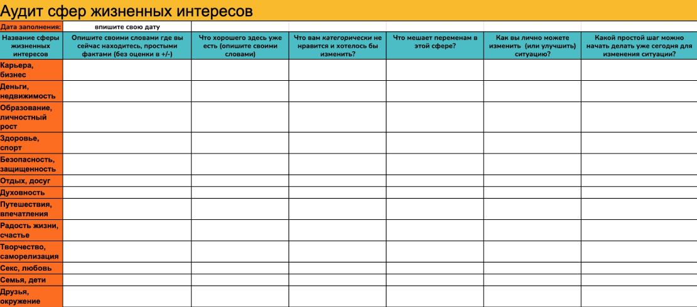

Также, как и колесо жизненного баланса – колесо сферы жизненных интересов скорее дано вам для наглядности и может содержать кроме предлагаемых мной пунктов, все что вам самим захочется сюда вписать, будь то разведение домашних питомцев, или отношения с родителями, вы можете заменять сферы и трансформировать круг СЖИ под себя.
Аудит мы будем проводить с вами последовательно, подробно разбирая каждую сферу жизни по заданной ниже схеме.
Вы можете делать это описание прямо в таблице (нужно будет сделать копию шаблона):
Скопировать таблицу Либо взять лист А4 и подробно расписать каждую из сфер, подробно отвечая на вопросы:
- Опишите своими словами где вы сейчас находитесь относительно данной сферы жизненных интересов, простыми фактами (без оценки в +/-)
- Что хорошего здесь уже есть (опишите своими словами)
- Что вам категорически не нравится и хотелось бы изменить?
- Что сейчас мешает переменам в этой сфере?
- Как вы лично можете изменить (или улучшить) ситуацию?
- Какой простой шаг можно начать делать уже сегодня для изменения ситуации?